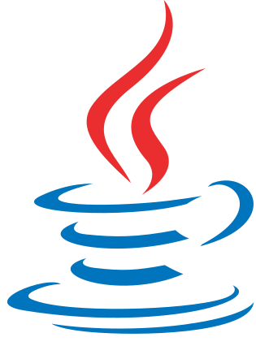
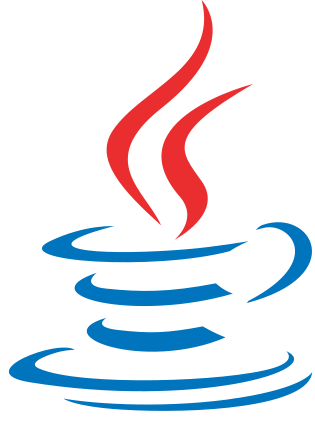

| Sobre mí
Mi nombre es Daniela Jurado Blandón, vivo en Medellín-Colombia y estudio ingeniería informática. Me fascina el mundo
de la programación por el simple hecho de que todos los días hay nuevas cosas por aprender y millones de formas de
aplicarlas o hacerlas.
La primera ejecución que le hice a un programa fue a mis 12 años al poner en un loop, bloques de código para que dos
motores de un pequeño robot LEGO rotaran. Recuerdo que no podía creer que el robot estuviera avanzando porque yo se
lo había ordenado o que giraba, paraba y retrocedía cuando yo quería porque lo había programado a mi gusto. Fue como ese
"Hello World" del que todos y todas nos impresionamos.
Después de eso, no quería salir del laboratorio de mi colegio porque ya era parte del equipo de robótica e iba a seguir
jugando y aprendiendo mientras programaba, y desde entonces no he parado de hacerlo.
Por mucho tiempo lo que más me gustaba era la robótica educativa y gracias a ella pude participar en muchos torneos y
vivir experiencias tan enriquecedoras que me di cuenta de lo que quería ser y hacer a futuro.
Así fue como llegue a escoger mi carrera universitaria y mi vocación, desde entonces he conocido muchos más campos en
donde puedo sentir esa misma sensación de programar por primera vez un pequeño robot.

| Experiencias
Estas son algunas de las competencia de robotica
y ferias de la ciencia en las que pude participar
en mi epoca escolar.
| Skills
Lenguajes de programación y herramientas que he trabajado
y sigo fortaleciendo.
 
